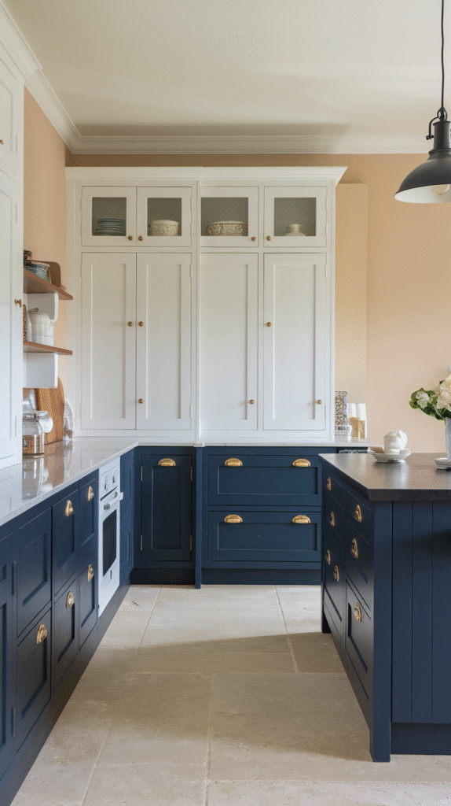
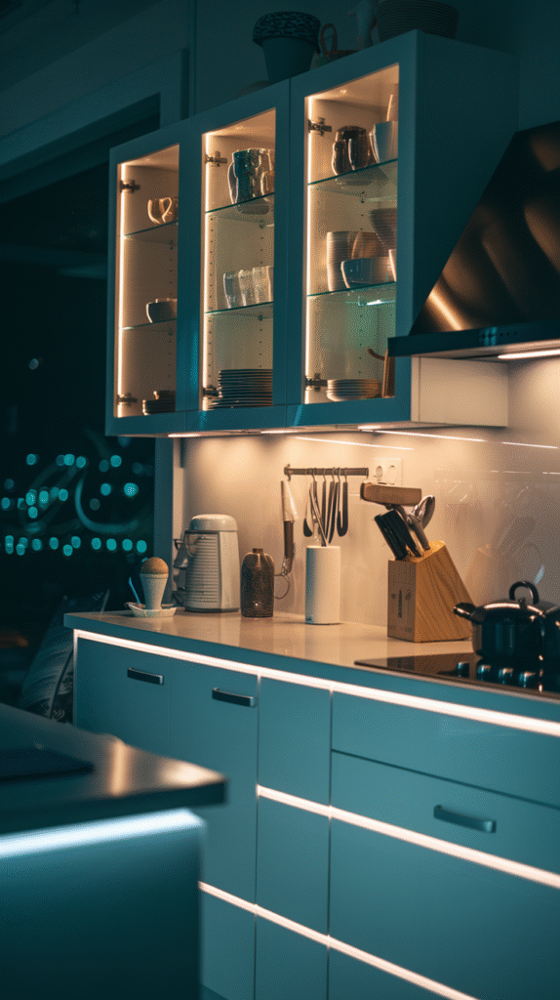
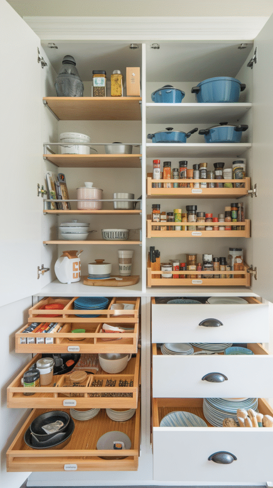
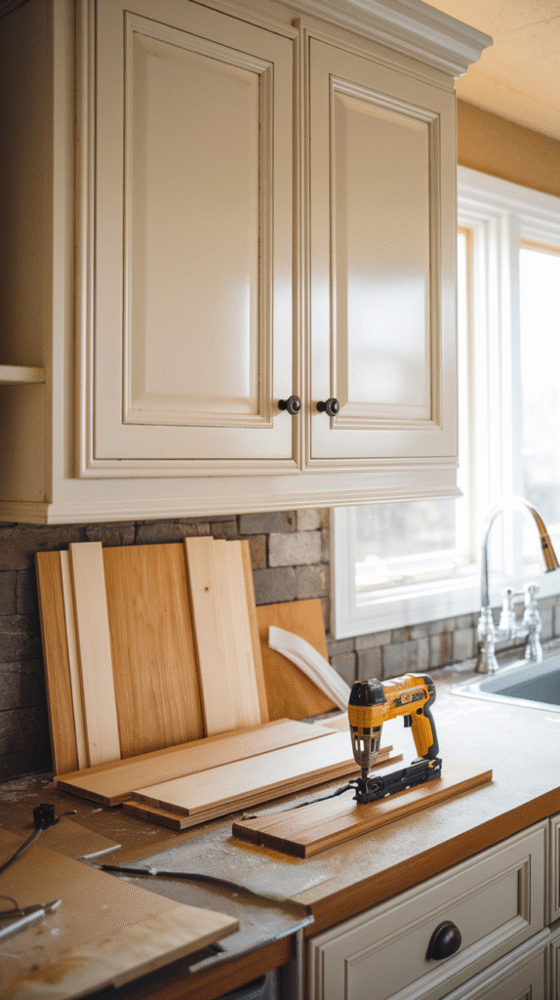
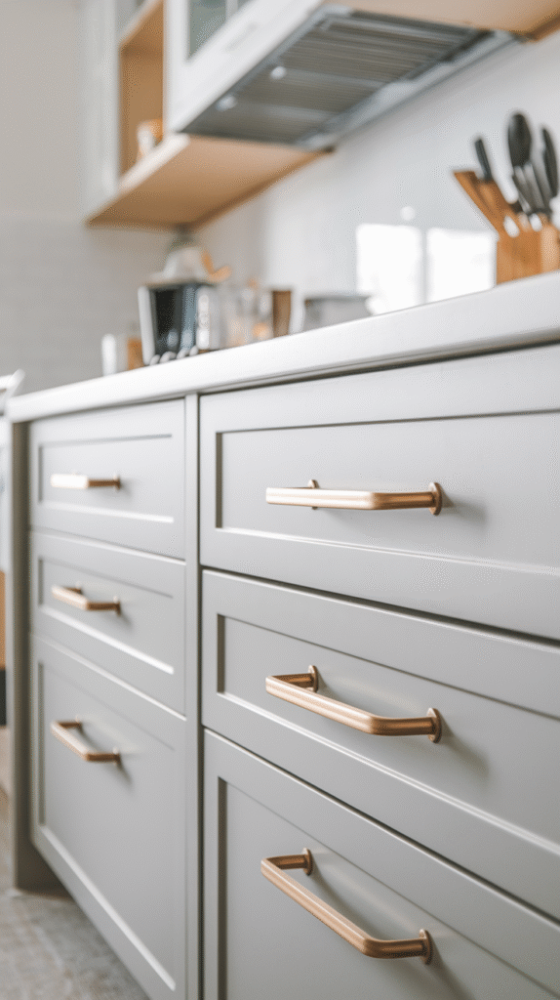
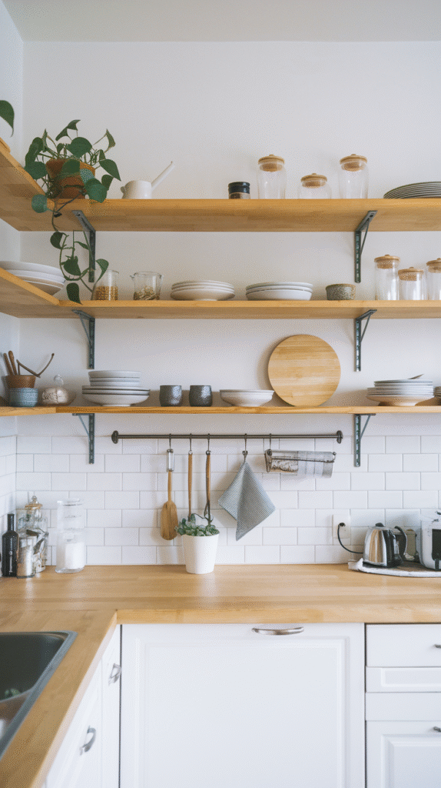
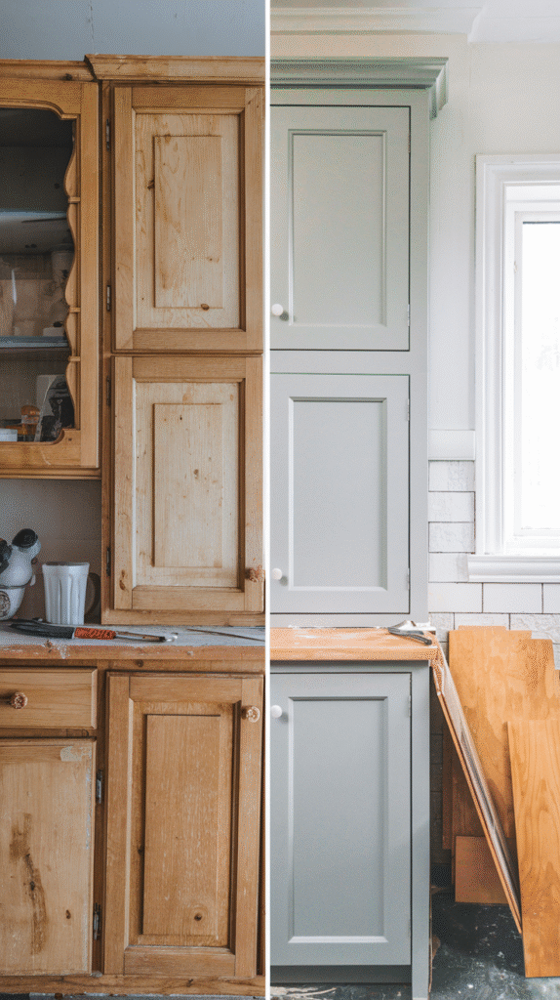
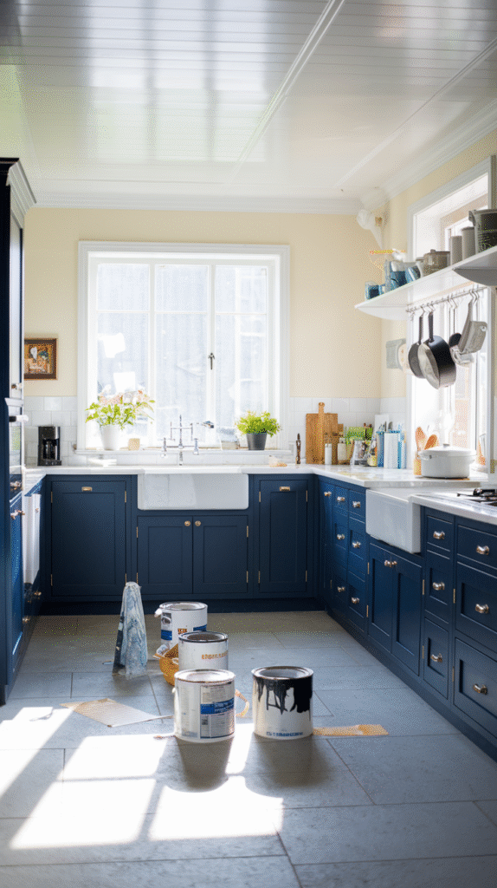

Full cabinet replacement is the most expensive kitchen renovation line item there is, and most of the time, it isn't actually necessary.
These eight techniques cover what genuinely transforms tired cabinets without tearing them out.

1. Go Two-Tone for Instant Style
Painting the upper and lower cabinets two different colors, or making the island a standout contrast, brings real visual interest without an entirely bold scheme.
This technique works especially well paired with a fresh coat of paint overall, since it's really just a more deliberate way of applying the same basic update.

2. Add Cabinet Lighting
Under-cabinet or interior cabinet lighting adds both genuine function and a noticeably more finished, higher-end look.
This is one of the more involved techniques on this list, but it transforms both how the kitchen looks and how usable the counter space actually is after dark.

3. Organize What's Inside
Pull-out drawers, dividers, and other internal organizers improve a kitchen's actual daily function in a way an exterior makeover alone doesn't touch.
This is worth doing alongside any of the other techniques here, since it solves a completely different problem than how the cabinets look from the outside.

4. Add Trim or Molding
Trim and molding added to plain cabinet fronts bring a custom, built-in look that flat doors alone simply can't replicate.
This technique works especially well on simpler, shaker-style doors, giving them a more elevated profile without replacing them entirely.

5. Hardware Swap: Small Change, Big Impact
New knobs and pulls change a cabinet's entire character in an afternoon, for less money and effort than almost anything else on this list.
Checking the existing screw hole spacing before buying new hardware avoids an unnecessary extra drilling step during installation.

6. Open Shelving: The Bolder Move
Removing a few upper cabinet doors entirely creates open shelving, which can make a kitchen feel more spacious and airy than closed cabinetry ever does.
The tradeoff is real, though, everything on an open shelf stays visible, which demands more consistent organization than a closed cabinet ever required.

7. Refacing: A Convincing Shortcut
Refacing replaces just the doors and drawer fronts while keeping the existing cabinet boxes, delivering most of a full replacement's visual impact at a fraction of the cost.
This makes the most sense when the cabinet boxes themselves are still structurally sound, with only the faces actually looking dated.

8. Paint: The Reliable First Move
A fresh coat of paint remains the single highest-impact, lowest-cost way to transform cabinets, and it works on nearly any existing cabinet material.
Proper sanding and a quality primer matter more here than the paint color itself, skipping either step is the most common reason a cabinet paint job fails early.

Keep It You
None of these eight techniques needs to happen alone, paint plus a hardware swap, or refacing plus new lighting, often does more together than any single technique on its own.
Whichever combination gets chosen, cabinets rarely need a full replacement to feel genuinely new again.